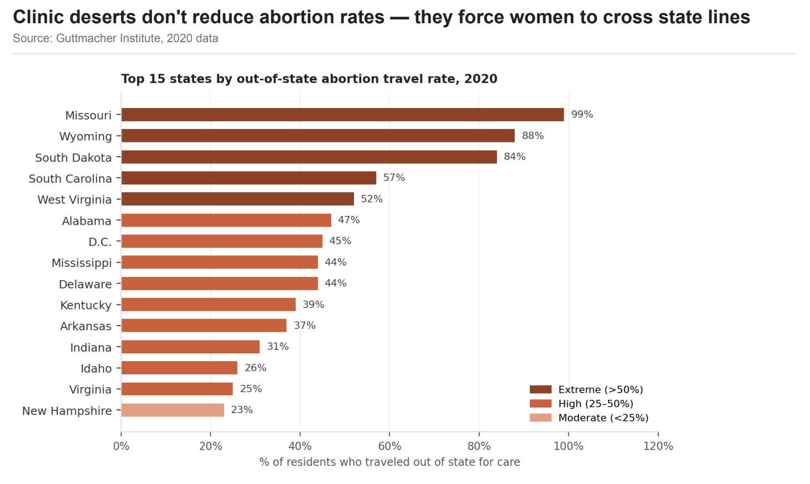

Proposition
Clinic deserts don't reduce abortion rates — they force women to cross state lines.
the Proposition
States with the fewest clinics don't see fewer abortions overall — they see the highest rates of women crossing state lines to seek care elsewhere. Source: Guttmacher Institute, 2020.

Design Decisions and Rationale
Score: −2 = fully deceptive · 0 = neutral · +2 = fully earnest
-
−1
Title phrased as a conclusion, not a description
The chart title states "Clinic deserts don't reduce abortion rates — they force women to cross state lines," which is our proposition rather than a neutral label. Readers primed by this framing are more likely to interpret the bars as evidence for that claim before examining the data critically. A neutral alternative ("Out-of-state abortion travel by state, 2020") would be more earnest. We chose the charged title because it anchors the reader's interpretation from the first moment — a subtle but effective rhetorical technique that stops short of outright fabrication.
-
−1
Color-coded urgency tiers ("Extreme," "High," "Moderate")
We assigned deep red to states where more than 50% of residents travel out of state, labeling this tier "Extreme." The warm red palette and loaded vocabulary carry emotional weight that nudges readers toward alarm. A more neutral design would use a single sequential hue. We chose this deliberately to maximize impact without the deception being immediately obvious — the tiers are real data breakpoints, but the color and language choices are editorially amplified.
-
−0.5
Selective subset: top 15 states only
Showing only the top 15 states by out-of-state travel excludes the many states with low travel rates, which would dilute the visual message. All 15 bars are high enough to look alarming at a glance. Showing all 50 states would be more complete and more earnest, but the pattern would feel less dramatic. This is a case of selective emphasis — technically accurate, but editorially weighted.
-
+1.5
Travel-centric metric captures the full picture
Choosing "% of residents who traveled out of state" as the primary metric is our most earnest decision. It directly tests whether clinic deserts reduce overall abortion demand or simply displace it. In-state rates alone would miss this. We considered several metrics (total abortions, providers per capita, rate per 1,000 women) and settled on the travel rate because it is the most complete answer to the proposition's claim — even if the other choices would also have been defensible.
the Proposition
States where more women live in clinic deserts consistently report lower abortion rates. A clear downward trend — with blue high-access states clustered in the upper left and red low-access states in the lower right — suggests that restricting access does reduce the number of abortions that occur. Source: Guttmacher Institute, 2020.
![Dark-themed scatter plot titled 'Less Access to Clinics Reduce Abortion Rate.' X-axis shows percentage of women aged 15–44 in a county without a clinic (0–100%). Y-axis shows abortions per 1,000 women aged 15–44 in 2020. Blue dots (high access, <30% in desert) cluster in upper left with higher abortion rates. Red-orange dots (low access, ≥60% in desert) cluster in lower right with lower rates. A dashed red OLS trendline descends from left to right, annotated with 'slope = −0.12 (each +10% desert = −1.2 fewer abortions per 1,000).'](clinics_reduce_abortion_scatterplot_dark.jpeg)
Design Decisions and Rationale
Score: −2 = fully deceptive · 0 = neutral · +2 = fully earnest
-
−2
Omission of out-of-state travel data
The scatter plot uses only in-state abortion occurrence rates, completely excluding cross-state travel. This is our most deceptive choice: a lower in-state rate looks like fewer abortions overall, when in reality many abortions simply occur in neighboring states. We were fully aware of this omission — it is precisely the counter-argument the FOR visualization makes. We scored this −2 because it directly suppresses the most important alternative explanation for the downward pattern shown. States like Missouri, which appear to have low abortion rates by this metric, actually have 99% of their residents traveling out of state for care.
-
−1.5
Trendline and slope annotation imply causation
The OLS trendline is mathematically valid, but annotating it with "slope = −0.12 (each +10% desert = −1.2 fewer abortions per 1,000)" implies a causal mechanism. The precise-sounding numerical language makes the relationship feel like a reliable policy lever when it is only a correlation that may be driven by cultural, demographic, religious, or political confounds. We deliberately used specific figures to lend false precision and authority — the number reads as a policy outcome when it is merely a statistical summary of an observational dataset riddled with lurking variables.
-
−1
Dark dashboard aesthetic signals scientific rigor
Styling the chart with a near-black background, white gridlines, monochromatic dot colors, and a courier-style monospaced font for annotations mimics the aesthetic of authoritative data journalism (Bloomberg, FiveThirtyEight). This visual language primes readers to trust the analysis as objective and rigorous. The aesthetic credibility is borrowed, not earned — the underlying argument omits critical data about cross-state travel. A plain white chart style would have presented the same correlation far less authoritatively, so we chose the dark theme specifically because it raised the perceived trustworthiness of a misleading framing.
-
−0.5
Three-color dot encoding reinforces the narrative arc
Coloring points by access tier (blue for high access, gray for moderate, red-orange for low) visually separates the scatter into three distinct clusters that track the trendline's descent from upper-left to lower-right. This makes the relationship look structurally clean and group-driven rather than noisy and overlapping. In reality, there is substantial overlap in abortion rates across tiers — several low-access (red) states have rates comparable to high-access (blue) ones. The color encoding draws attention to the between-group pattern while visually downplaying the within-group variance that would complicate the story.
Final Reflection
The most striking realization from this project was how naturally deception emerges from choices that feel entirely defensible in isolation. Selecting a meaningful metric, fitting a trendline, writing a title that "summarizes" the chart — each is a standard visualization practice. But when every choice is made in service of a predetermined conclusion, the cumulative effect misleads even when no individual step involves fabricating data. The AGAINST visualizations were the clearest illustration of this: using in-state rates only, fitting a regression, grouping into tiers, and applying a scientific dark aesthetic are all common techniques. None is individually dishonest, but together they construct a world in which cross-state travel simply does not exist — and that omission is the most consequential deception in the project.
We found the FOR visualizations easier to defend ethically because the travel metrics offer a more complete picture of what happens when clinic access is restricted. Even so, we made choices that were rhetorically loaded: labeling tiers "Extreme," writing the title as a declarative conclusion, and restricting the bar chart to the top 15 states that tell the most alarming story. The line between "choosing the right frame" and "manipulating the reader" proved narrower than we expected. What surprised us most was that the FOR side — which we believe is more factually complete — still required deliberate rhetorical choices to be persuasive. Earnest data presentation rarely speaks for itself.
We now understand ethical visualization less as a fixed rulebook and more as a practice of accountability. An acceptable persuasive choice, in our view, is one where the designer could transparently explain their decision — including what was omitted and why — without the visualization losing credibility. A misleading choice is one whose persuasive power depends on the reader not noticing it. By that standard, omitting out-of-state travel from abortion rate charts is unambiguously misleading, while using urgency-signaling colors is merely opinionated. The practical boundary lies in whether the core empirical picture is intact or has been quietly replaced.